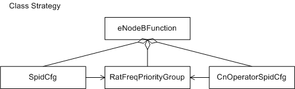

This section describes the functions and concepts of user steering, illustrates the managed object model (MOM) of user steering, and explains managed objects (MOs) related to user steering.
Functions and Concepts
By using user steering, the E-UTRAN can provide customized and differentiated services based on the subscriber profile ID (SPID), meeting the requirements of different types of users.
Managed Object Model
Figure 1 shows the user steering MOM, which is a subset of the eNodeB MOM.
Figure 1 User steering MOM

The MOs shown in
Figure 1 are specified as follows:
- SpidCfg defines a Subscriber Profile ID (SPID) configuration. An SpidCfg consists of the parameters associated with a Subscriber Profile ID (SPID). The parameters include
the priority of camping of a UE in idle mode, inter-frequency or inter-RAT handover priority of a UE in connected mode, support of special DRX, support of preallocation, switch for SPID-based inter-frequency or inter-RAT load balancing, and switch
for SPID-based handover back to the HPLMN. Special DRX is configured for UEs that do not require power saving.
- RatFreqPriorityGroup defines a RAT or frequency priority group.
- CnOperatorSpidCfg defines the configuration of an SP ID, and the RAT frequency priority for an operator.
- eNodeBFunction defines Root node of the eNodeB function domain. The eNodeB function is used for radio access in the LTE system. It mainly performs radio resource management (RRM) functions such as air
interface management, access control, mobility control, and UE resource allocation.
Copyright © Huawei Technologies Co., Ltd.